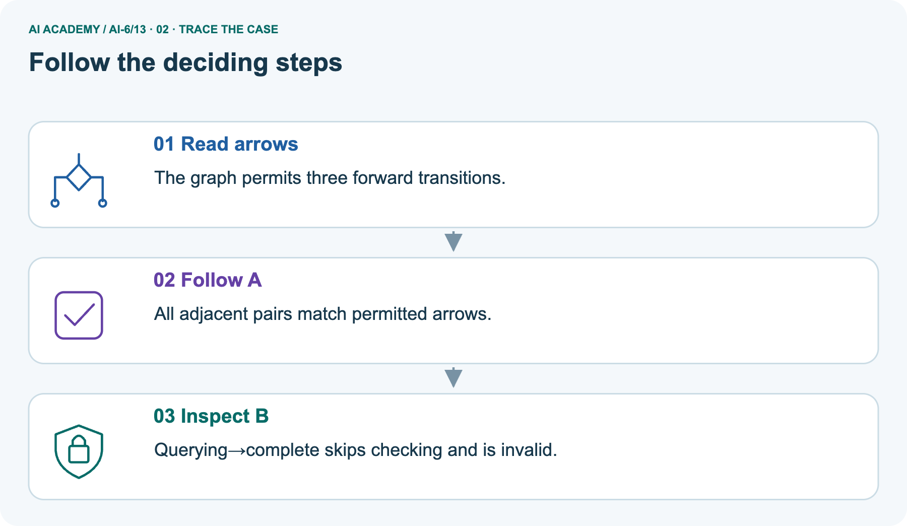
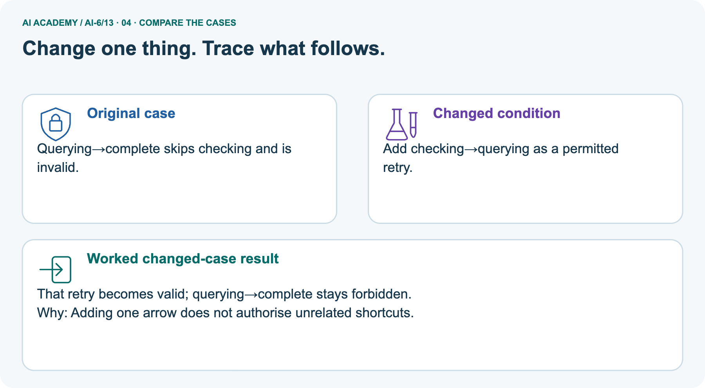
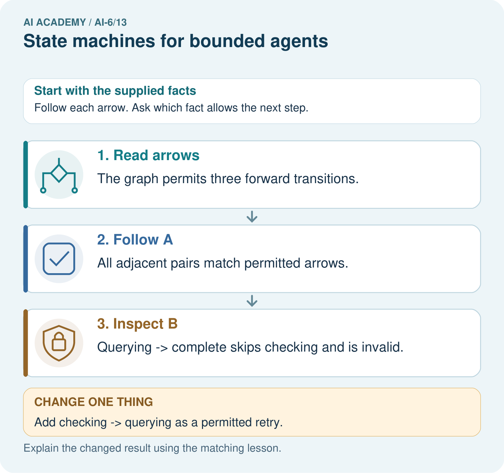
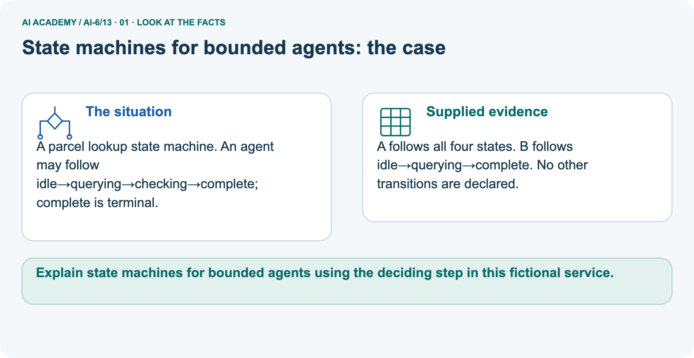
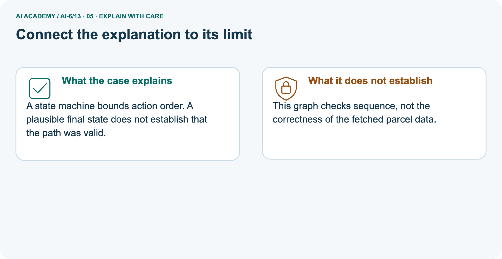
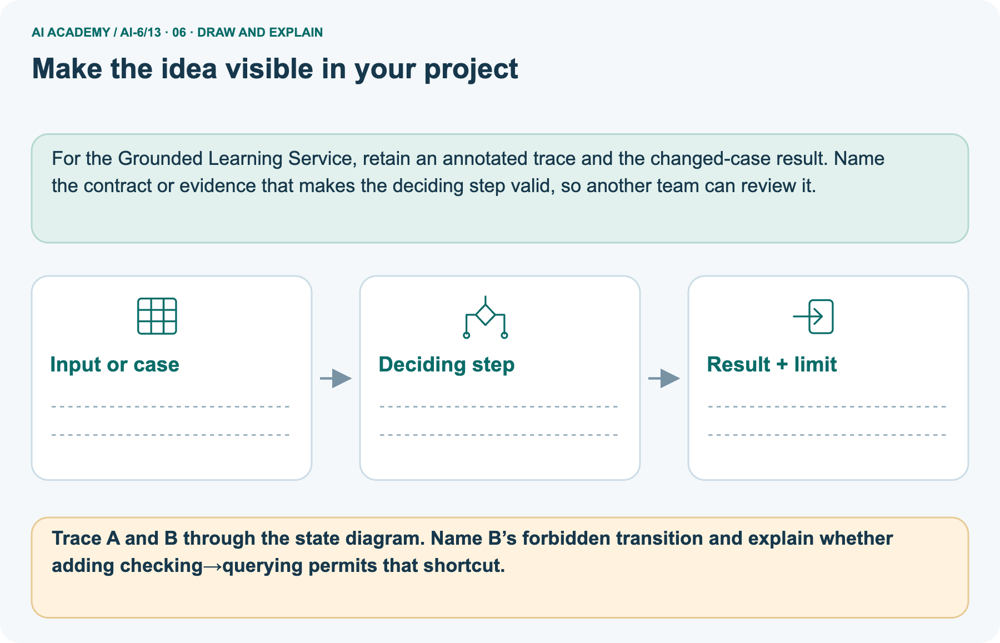

AI Academy · Level 6 · Grade 11 · Week 13 · Student lesson
State machines for bounded agents
Learn to understand, design, build, test and explain AI systems responsibly.
Project: Grounded Learning Service
THE CONNECTED WEEK
Follow declared arrows. Check the guard. Retain the budget.
Audit bounded state paths while separating graph validity, evidence requirements, completion and local action counts.
Keep one habit: Original contract → directed graph → invalid-prefix ledger → parcel picture → guard/budget probes → executable graph revision → independent narrower table.
Main lesson · Section 1
Follow permitted arrows and keep the action count bounded
A valid destination does not prove a valid path.
Learning goals
I can explain the mechanism and terminology of state machines for bounded agents.
I can apply the stated procedure to a new case with a traceable result.
I can identify an assumption or limitation and design a revealing follow-up.
Retrieve trace evidence and failure boundaries
Close your notes first. A rough first answer helps us choose the right starting point; it is not a score for your ability.
Without opening the old lesson, explain one key idea from Logs traces and privacy. Give an example and a mistake that the idea helps you avoid.
Without opening the old lesson, explain one key idea from Evaluation pipelines. Give an example and a mistake that the idea helps you avoid.
Without opening the old lesson, explain one key idea from Testing pure components. Give an example and a mistake that the idea helps you avoid.
After trying, check the relevant lesson or ask your teacher. Change the part of your explanation that the evidence shows was wrong.
Prerequisite and starting response
Recall Logs traces and privacy. Explain why a recorded result needs its input conditions and evidence source before it can support a claim.
End goal
Explain state machines for bounded agents using the deciding step in this fictional service.
Earlier wording, alternatives and picture transcripts
Your learning target
Remember before reading
This week you will practise:
Explain the mechanism and terminology of state machines for bounded agents
Apply the stated procedure to a new case with a traceable result
Identify an assumption or limitation and design a revealing follow-up
Retrieve what you already know
This week’s end goal
Main lesson · Section 2
Write the transition policy and budget as separate rules
Explicit states make the earliest forbidden move visible.
Begin with the map-and-doors explanation
Think of an agent moving through rooms connected by labelled doors. The state says which room it is in; a permitted transition is a door it may use. Having a budget of two lookup attempts does not create a door that the map forbids. Separately, reaching a review-completion door may require authorized evidence.
Check the arrow, the action budget and the required evidence rather than assuming that a plausible final answer means the whole path was valid.
Define bounded state machines
A bounded agent uses explicit states and finite action limits. A state machine makes invalid transitions visible.
Complete original graph and guard contract
| Main original state policy | Exact rule |
|---|---|
| Start | ready, with lookup-entry counter 0 |
| ready | May move only to looking_up |
| looking_up | May move to review or done |
| review | May move to done only, after authorized review evidence |
| done | Terminal: no outgoing transition |
| Lookup budget | At most 2 accepted entries into looking_up; does not add retry arrows |
| Valid prefix | Every transition so far is allowed; may still be incomplete in review |
| Evidence scope | Local boolean evidence flag is a supplied trusted fixture, not real evidence verification |
| Original graph consequence | No retry cycle exists, so a valid original path enters looking_up at most once |
Name supplied and missing evidence
Earlier wording, alternatives and picture transcripts
Begin by writing the question the procedure is intended to answer. Identify the information already supplied, the information it will produce and the information still missing.
These are constructed classroom examples; they do not require live accounts, private records or an external service. Do not treat a plausible explanation as a measured outcome.
Main lesson · Section 3
Trace the original graph to its first forbidden edge
Stop the accepted path before an unauthorized retry.
Original state policy and maximum attempts
States are ready, looking_up, review, done. ready may start lookup; lookup may finish done or request review; review may finish done after authorised evidence. done is terminal. Maximum two lookup attempts.
Labelled directed state graph

Complete invalid-proposal trace
| Proposed adjacent step | Arrow check | Accepted lookup entries | Result |
|---|---|---|---|
| ready → looking_up | Allowed | 1 | Continue |
| looking_up → review | Allowed | 1 | Continue; review is not done |
| review → looking_up | Forbidden in original graph | 1 | Reject before second entry |
| Remaining proposed → done | Not processed after rejection | Counter remains 1 | Do not report the whole trace valid |
| Two lookup markers in proposed text | Budget alone would not exceed 2 | Not two accepted executions | Missing arrow still invalidates proposal |
State the guard assumptions
Before applying the procedure, write its units, denominator or decision boundary where relevant. A partner should be able to repeat each step using the same inputs.
If a required input is absent or violates the stated contract, record that condition explicitly instead of quietly replacing it with a convenient value.
Explain the visual
Point to the input, the deciding step and the result in this week’s visual. Explain the same step in ordinary words. A picture helps when you can say what each part represents.
Earlier wording, alternatives and picture transcripts
State machines for bounded agents — evidence trace
Connect the picture and the explanation
Main lesson · Section 4
Revise one arrow explicitly and retest the remaining limits
A changed graph is a separate policy version, not a silent exception.
Current task and response
Trace ready -> looking_up -> review -> looking_up -> done. Show the intermediate steps and give the conclusion with its scope.
Predict the pictured retry-arrow change
Change: Add checking→querying as a permitted retry.
Check after predicting
Prediction: That retry becomes valid; querying→complete stays forbidden.
Reason: Adding one arrow does not authorise unrelated shortcuts.
Earlier wording, alternatives and picture transcripts
Compare a familiar case with a changed case
Change one thing in the pictured case
Main lesson · Section 6
Compare two paths against the graph that actually applies
Do not borrow an edge or a guard from another scenario.
Main proposed path and original graph conclusion
Trace ready -> looking_up -> review -> looking_up -> done.
review -> looking_up is not allowed by this declared transition table, even if total attempts is two. Reject the transition or explicitly redesign and retest the table.
Keep the trace’s scope
Compare the intermediate evidence with the final statement. Explain why each number or decision follows from the stated inputs.
The conclusion belongs to this scenario and procedure; changing the inputs, evaluation population or authority can change what it establishes. Retain the raw record so a later revision can be compared honestly.
Separate parcel graph and complete A/B paths
A parcel lookup state machine. An agent may follow idle→querying→checking→complete; complete is terminal.
A follows all four states. B follows idle→querying→complete. No other transitions are declared.
The main ready/looking_up/review/done graph and the picture’s parcel graph are separate. Parcel permits idle→querying→checking→complete, with complete terminal. Path A uses all four states and follows every declared arrow; B goes querying→complete and skips checking, so it is invalid. Adding checking→querying permits that one retry edge but still does not permit querying→complete.
A real retrying agent also needs an action budget; the picture only checks its stated finite paths, not parcel-data truth or a running autonomous loop.
Trace allowed edges and skipped checking



Read the picture one step at a time
A state machine bounds action order. A plausible final state does not establish that the path was valid.
Predict adding only checking→querying
Change one thing: Add checking→querying as a permitted retry. Predict the result before checking the explanation. What remains the same?
Check after predicting



Explain the forbidden shortcut and data-correctness limit
This graph checks sequence, not the correctness of the fetched parcel data.
Read the labelled picture: Trace A and B through the state diagram. Name B’s forbidden transition and explain whether adding checking→querying permits that shortcut.
Reference: original arrow-only helper
Optional local lab: predict the printed result before running this standalone Python 3 example. Change one relevant boundary input, record the outcome and state the contract or statistical assumptions.
The program uses fictional values and the Python standard library; it performs no external operations.
def transition(state, target):
allowed = {'ready': {'looking_up'}, 'looking_up': {'review', 'done'}, 'review': {'done'}, 'done': set()}
if target not in allowed.get(state, set()):
raise ValueError('invalid transition')
return target
print(transition("ready", "looking_up"))Earlier wording, alternatives and picture transcripts
Learn from the worked case
Cover the result before checking it. Say what is given, choose the procedure, and follow one step at a time. Then uncover the result and explain your first mismatch. Ask why a step is allowed, not only what number it produces.
A pictorial worked case: State machines for bounded agents
The facts we will use



Why this result follows
What this example does not establish
Main lesson · Section 7
Check graph, guard and budget independently
Satisfying one control does not establish the others.
Core action-budget-versus-transition qualification
An action budget and a transition policy are separate checks; satisfying one does not guarantee the other.
A useful check asks what would make the reasoning fail. Distinguish a failure to execute the declared procedure from a weakness in the procedure itself.
The first may require a correction; the second requires an explicitly revised method and new evidence. Preserve unsuccessful cases so an improved result cannot hide the original problem.
Complete prefix, evidence, retry and terminal probes
| Complete transition/budget probe | Expected interpretation |
|---|---|
| Original ready→looking_up→review | Valid prefix, incomplete task |
| Then review→done without authorized review evidence | Declared arrow exists but evidence guard rejects |
| Same path with supplied authorized-evidence flag | Graph/guard audit can complete; flag is not independently verified evidence |
| Original review→looking_up with spare budget | Forbidden arrow; spare budget does not authorize it |
| Explicit revised graph adds review→looking_up | Retry edge can be used, subject to retained budget |
| Revised graph attempts a third lookup entry | Budget rejects even though retry edge exists |
| done→looking_up | Terminal-state policy rejects |
| Compact original helper accepts an arrow | It checks only adjacency; complete budget/evidence checks are in the new audit |
| A graph audit passes | Does not prove real tool execution, fetched facts or external correctness |
Guided explanation and repair
A report omits this qualification: An action budget and a transition policy are separate checks; satisfying one does not guarantee the other.
Explain how omitting it could change a reader's interpretation, and write an accurate replacement.
Earlier wording, alternatives and picture transcripts
Locate the earliest unsupported step
Main lesson · Section 8
Practise locating the first forbidden transition
Write the applicable graph and any additional guard beside the path.
Current explanation and guided scope check
Explain the weekly mechanism in your own words. Use the worked scenario to name its input, decision rule and output.
Supported W2 record
Use workbook W2 for the connected example “State machines for bounded agents”. First fill the input and rule boxes. Try the middle steps before asking for a hint. After a hint, try the next step yourself.
| Plan | Do | Check |
|---|---|---|
| What is given? Which rule or procedure applies? | Record each intermediate step. | Does the result follow? What remains unknown? |
Explain your trace to a partner. Your partner points to one step to check. Swap roles on the next case. Each person writes their own explanation.
Individual control-independence check
Use the worked case for State machines for bounded agents. Proposed explanation: “The worked result establishes every future case”. Decide whether this explanation is supported.
Point to the step or supplied fact that decides; explain your repair if needed.
Answer on your own before discussion. If you are unsure, say which step you need help with.
Parcel picture response
Trace A and B through the state diagram. Name B’s forbidden transition and explain whether adding checking→querying permits that shortcut.
Reserve the selected narrower independent graph
This is supported practice. Keep the separately named independent case for an attempt before feedback.
Earlier wording, alternatives and picture transcripts
Practise with less help: Trace the worked case
Check your reasoning
Explain the picture
Main lesson · Section 9
Run the complete state-path and bounded-retry audit
Preserve the accepted prefix and first rejected move rather than only a final-state label.
Current original-graph trace investigation
Trace ready -> looking_up -> review -> looking_up -> done. Show the intermediate steps and give the conclusion with its scope.
Complete runnable guards, revision and budget checks
"""Explicit state transitions and lookup-entry budgets; no real agent/tools."""
BASE={'ready':{'looking_up'},'looking_up':{'review','done'},
'review':{'done'},'done':set()}
def step(state,target,attempts,policy,maximum=2,authorized_review_evidence=False):
if (type(attempts) is not int or attempts<0 or type(maximum) is not int
or maximum<=0 or attempts>maximum or type(authorized_review_evidence) is not bool):
raise ValueError('invalid counter or evidence flag')
if type(state) is not str or type(target) is not str:
raise ValueError('state names must be strings')
if state not in policy or target not in policy.get(state,set()):
raise ValueError('transition not declared')
if state=='review' and target=='done' and not authorized_review_evidence:
raise ValueError('authorized review evidence required')
next_attempts=attempts+int(target=='looking_up')
if next_attempts>maximum:raise ValueError('lookup-entry budget exhausted')
return target,next_attempts
def audit(path,policy=BASE,maximum=2,authorized_review_evidence=False):
if not path or path[0]!='ready':raise ValueError('trace must start ready')
state='ready';attempts=0;prefix=['ready']
for index,target in enumerate(path[1:],1):
before=state
try:state,attempts=step(state,target,attempts,policy,maximum,authorized_review_evidence)
except ValueError as error:
return {'valid':False,'complete':False,'first_invalid_step':index,
'from':before,'to':target,'reason':str(error),
'accepted_prefix':prefix,'lookup_entries':attempts}
prefix.append(state)
return {'valid':True,'complete':state=='done','accepted_prefix':prefix,
'lookup_entries':attempts}
proposed=['ready','looking_up','review','looking_up','done']
original=audit(proposed)
assert not original['valid'] and original['first_invalid_step']==3
assert original['lookup_entries']==1 and original['reason']=='transition not declared'
print('Main invalid proposal, original graph:',original)
waiting=audit(['ready','looking_up','review'])
assert waiting['valid'] and not waiting['complete']
without_evidence=audit(['ready','looking_up','review','done'])
with_evidence=audit(['ready','looking_up','review','done'],authorized_review_evidence=True)
assert not without_evidence['valid'] and with_evidence['valid'] and with_evidence['complete']
print('Valid but incomplete prefix:',waiting)
print('Review completion without/with supplied authorized-evidence flag:',without_evidence,with_evidence)
# Explicit graph revision: do not mutate the original or reset the counter.
revised={state:set(targets) for state,targets in BASE.items()}
revised['review'].add('looking_up')
revised_trace=audit(proposed,policy=revised)
assert revised_trace['valid'] and revised_trace['lookup_entries']==2
third=['ready','looking_up','review','looking_up','review','looking_up','done']
exhausted=audit(third,policy=revised)
assert not exhausted['valid'] and exhausted['reason']=='lookup-entry budget exhausted'
assert BASE['review']=={'done'}
print('Separately revised graph permits two entries:',revised_trace)
print('Third entry denied even with revised arrow:',exhausted)
assert not audit(['ready','looking_up','done','looking_up'])['valid']
# Separate picture checks finite parcel paths, not parcel data or an autonomous loop.
parcel={'idle':{'querying'},'querying':{'checking'},'checking':{'complete'},'complete':set()}
def parcel_path(path,arrows):
return bool(path) and path[0]=='idle' and path[-1]=='complete' and all(b in arrows.get(a,set()) for a,b in zip(path,path[1:]))
assert parcel_path(['idle','querying','checking','complete'],parcel)
assert not parcel_path(['idle','querying','complete'],parcel)
parcel_retry={state:set(targets) for state,targets in parcel.items()}
parcel_retry['checking'].add('querying')
assert not parcel_path(['idle','querying','complete'],parcel_retry)
print('Parcel retry arrow does not authorize querying directly to complete.')
print('Local trace audit only. Evidence flag is a supplied trusted fixture, not real evidence verification; no actual lookup occurs.')
Expected path outcomes and simulation limits
Predict the first invalid edge and accepted prefix before running or tracing. The original proposal rejects review→looking_up before the second lookup entry. Compare a valid but incomplete review prefix with review completion without/with the supplied evidence flag. The program copies the graph to add one explicit retry edge, keeps the original unchanged and rejects a third lookup entry under the retained cap.
It records local state-entry counts rather than making real tool calls. The original compact helper checks only adjacency, while the complete audit separately checks the counter and review-evidence flag. The parcel helper checks its finite declared paths, not a complete deployed agent.
Evidence ledger and reflection
| Record | Your evidence |
|---|---|
| Given input and fixed rule | |
| Prediction before checking | |
| Actual result, or “not run” | |
| First mismatch and one explanation | |
| Boundary or missing input and expected response |
On paper, trace the supplied procedure. If code is provided, predict before running it in a local practice file. Never write an expected answer as though it were an observed run.
Before trying: what do I expect, and why? While trying: which step could first go wrong? Afterwards: what did I actually observe, and what should change? Keep “not run” if you only traced the procedure.
Reference: original adjacency-only helper
def transition(state, target):
allowed = {'ready': {'looking_up'}, 'looking_up': {'review', 'done'}, 'review': {'done'}, 'done': set()}
if target not in allowed.get(state, set()):
raise ValueError('invalid transition')
return target
print(transition("ready", "looking_up"))Earlier wording, alternatives and picture transcripts
Predict, investigate and preserve the evidence
Plan → try → check
Main lesson · Section 14
Try alone: follow a new narrower transition table
Use only the arrows explicitly supplied in this task.
Complete selected independent graph and two paths
Only these transitions are allowed: ready→looking_up→review→done. Done is terminal. Evaluate ready→review→done and ready→looking_up→review→done.
First attempt and support record
Attempt this case before feedback. Record any help. Earlier examples below are further practice; a case already practised with feedback cannot establish fresh transfer.
Feedback after trying
Attempt the independent case before hints. Record whether you worked alone, used a hint or followed a model. After feedback, fix the first unsupported step and explain why it changed.
A later check uses a changed case, not a copied answer.
Earlier wording, alternatives and picture transcripts
Independent case: Changed independent case
Attempt this without hints
Trace ready -> looking_up -> review -> done -> looking_up. Find first invalid transition.
Record support used: none, hint or teacher explanation. After feedback, a different case is needed to demonstrate independence.
Use feedback to improve
Main lesson · Section 11
Save the transition table, guards and action counter policy
Preserve graph versions and rejected traces as regression cases.
Project task and artifact
Add a labelled state machines for bounded agents evidence sheet to Grounded Learning Service. Show how you can explain the mechanism and terminology of state machines for bounded agents.
Use the supplied fictional case and keep its inputs, intermediate steps, calculation or prediction, and limitation. Connect this record to last week’s record; a matching answer without a trace is insufficient.
| Project evidence | Record |
|---|---|
| Component and version | |
| Inputs permitted at prediction time | |
| Trace and comparison with earlier work | |
| Failure, limit and human review |
Actual run or trace and limitations
For the Grounded Learning Service, retain an annotated trace and the changed-case result. Name the contract or evidence that makes the deciding step valid, so another team can review it.
Earlier wording, alternatives and picture transcripts
Evidence for your project
Main lesson · Section 16
Finish with a valid path and an honest completion claim
A terminal state does not establish truthful evidence or successful real-world execution.
Retrieve and explain
Close your notes. Explain this goal in your own words: Explain the mechanism and terminology of state machines for bounded agents
Plan a changed-case return
If you are unsure, return to the worked picture and explain one arrow. If you are ready, change an input or assumption and justify your prediction.
Save your workbook evidence. At the next review, try a different case before opening your old answer.
Reference bank and extra practice
Choose the reference that helps your next step.
Reference · Use service vocabulary precisely
Reference · Section 5
Reference · Use service vocabulary precisely
Connect each term to an input, operation, evidence source or outcome.
Vocabulary and your explanation
| Word | Meaning |
|---|---|
| State | A declared stage of a process |
| Transition | An allowed move between states |
| Terminal state | A state with no further operations under the contract |
Extra challenge · Explain a stronger case
Reference · Section 10
Extra challenge · Explain a stronger case
Choose the next challenge after the main route.
Explain,repair and extend
Explain the weekly mechanism in your own words. Use the worked scenario to name its input, decision rule and output.
A report omits this qualification: An action budget and a transition policy are separate checks; satisfying one does not guarantee the other.
Explain how omitting it could change a reader's interpretation, and write an accurate replacement.
For the worked scenario, propose one additional case that could reveal a failure, describe its expected outcome before running it, and explain what would need to remain fixed for a fair comparison.
Do not reuse W4 as a new final test after receiving feedback.
Explain → apply → challenge
Reference · Check the service reasoning and its limits
Reference · Section 12
Reference · Check the service reasoning and its limits
Use after practice; keep the selected independent case for its first attempt.
Current explanation and response
Complete the supported workbook tasks before attempting W4 independently. Record any hints or help used. After feedback, use the teacher's fresh retry rather than copying the earlier answer.
For a project, select a relevant new case, predict the outcome from the declared rule and preserve the result alongside any revision.
For the worked scenario, propose one additional case that could reveal a failure, describe its expected outcome before running it, and explain what would need to remain fixed for a fair comparison.
Do not reuse W4 as a new final test after receiving feedback.
Extra practice · Revisit the complete trace
Reference · Section 13
Extra practice · Revisit the complete trace
Predict before reading the supplied steps.
Complete trace and evidence
Complete evidence record
State machines for bounded agents — evidence trace
Follow the input through the stated procedure to its result. Cover the result first, predict it, then explain every intermediate step. The text/table accompanies the figure so the example can be read without colour.
Reference · The earlier route checklist
Reference · Section 15
Reference · The earlier route checklist
Use one main route rather than repeating the lesson.
Targets,route and first prediction
Start with this question: A parcel lookup state machine. An agent may follow idle→querying→checking→complete; complete is terminal.
| By the end, I can | How I will show it |
|---|---|
| Explain the mechanism and terminology of state machines for bounded agents | Explain the deciding step, show a trace or test, and state one limit. |
| Apply the stated procedure to a new case with a traceable result | Explain the deciding step, show a trace or test, and state one limit. |
| Identify an assumption or limitation and design a revealing follow-up | Explain the deciding step, show a trace or test, and state one limit. |
Remember → watch and explain → try with help → investigate → try independently → keep project evidence. Your teacher may spread this lesson across several classes.
Keep your first prediction. Compare it with what the evidence shows and explain any change.
Extra practice · Predict,check and repair
Reference · Section 17
Extra practice · Predict,check and repair
Keep supported feedback separate from the independent case.
First supported question and optional hint
A parcel lookup state machine. An agent may follow idle→querying→checking→complete; complete is terminal.
Which labelled step matches this detail? Querying→complete skips checking and is invalid.
1. Follow A
2. Read arrows
3. Inspect B
Hint if needed: Read the steps in the pictorial case. Match the supplied detail to the stage that performs or records it.
Practice 1: explain the deciding evidence
Check after the first attempt
After your attempt, compare with the supported explanation: Inspect B Querying→complete skips checking and is invalid. A state machine bounds action order. A plausible final state does not establish that the path was valid.
Changed-case question and optional hint
Changed-case practice: Add checking→querying as a permitted retry. Which conclusion is supported by the supplied facts?
1. That retry becomes valid; querying→complete stays forbidden.
2. This one example guarantees correct results for every future input.
3. We can decide the result without examining the changed input or the procedure.
Hint if needed: Use the changed condition and the deciding step in the pictorial trace. The answer must say what follows from those facts.
Practice 2: explain the deciding evidence
Check after the changed attempt
After your attempt, compare with the supported explanation: That retry becomes valid; querying→complete stays forbidden. Adding one arrow does not authorise unrelated shortcuts.
Repair and retain the record
Review Logs traces and privacy (ai-6/12). Goal: Explain the mechanism and terminology of logs traces and privacy. Short practice: Identify the purpose of R17, C8 and 240 ms in the trace.
Which field is deliberately omitted, and why would logging the whole question violate this design?. Return to this week and explain what you changed.
Review Evaluation pipelines (ai-6/10). Goal: Explain the mechanism and terminology of evaluation pipelines. Short practice: Calculate A’s and B’s correct rates on all four cases.
Identify their shared failure and explain why removing that case after scoring changes the honesty of the comparison.. Return to this week and explain what you changed.
Review Testing pure components (ai-6/7). Goal: Explain the mechanism and terminology of testing pure components. Short practice: Predict the formatter outputs for 7 and 12, including spacing.
Why does input 0 need rejection under this contract rather than an ordinary formatted response?. Return to this week and explain what you changed.
The browser lab lets you edit the supported Python examples already included in this lesson. Predict first, run, inspect the actual output or error, change one input, then run again.
Keep code, predictions, actual results and a reasoned revision together. On paper, label your result as a trace rather than an execution.
Use Download completed work in the hosted lesson to export your answers, reflections, practice feedback and code-run evidence. Open the HTML copy to read or print it.
Drafts stay in this browser when storage is available; clear drafts on a shared device.
Earlier wording, alternatives and picture transcripts
Use this supported practice once, in the browser or on paper. Keep the reserved independent assessment for a separate first attempt before teacher feedback.
Repair a missing building block
Predict, run and debug
Keep your completed work
Reference · Six-picture concept journey
Reference · Section 18
Reference · Six-picture concept journey
Choose the picture that supports the current explanation.
01. State machines for bounded agents: the case



A parcel lookup state machine. An agent may follow idle→querying→checking→complete; complete is terminal. Supplied facts: A follows all four states. B follows idle→querying→complete. No other transitions are declared.
Point to the given fact that matters most. Explain why it matters.
02. Follow the deciding steps
Read arrows: The graph permits three forward transitions. → Follow A: All adjacent pairs match permitted arrows. → Inspect B: Querying→complete skips checking and is invalid.
Point to each numbered stage and explain which recorded input it uses.
03. State machines for bounded agents — evidence trace


State machines for bounded agents — evidence trace.
Trace ready -> looking_up -> review -> looking_up -> done. | States are ready, looking_up, review, done. ready may start lookup; lookup may finish done or request review; review may finish done after authorised evidence. done is terminal.
Maximum two lookup attempts. | review -> looking_up is not allowed by this declared transition table, even if total attempts is two. Reject the transition or explicitly redesign and retest the table.
Read the labels and values. Explain the relationship the model shows.
04. Change one thing. Trace what follows.
Original case: Querying→complete skips checking and is invalid. Changed condition: Add checking→querying as a permitted retry. Expected result: That retry becomes valid; querying→complete stays forbidden.
Reason: Adding one arrow does not authorise unrelated shortcuts.
Predict before checking the worked changed-case result. Name what changed and what the supplied facts allow you to conclude.
05. Connect the explanation to its limit



A state machine bounds action order. A plausible final state does not establish that the path was valid. Limit: This graph checks sequence, not the correctness of the fetched parcel data.
Explain the case, then point to a limit on the claim.
06. Make the idea visible in your project



For the Grounded Learning Service, retain an annotated trace and the changed-case result. Name the contract or evidence that makes the deciding step valid, so another team can review it.
Draw your input, deciding step, result and limit. Supported question: Trace A and B through the state diagram. Name B’s forbidden transition and explain whether adding checking→querying permits that shortcut.
Draw your project trace and justify the deciding step using evidence.